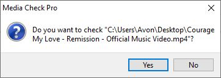
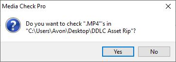
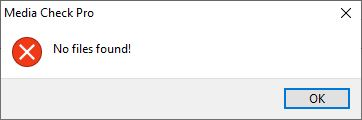
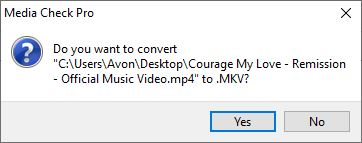
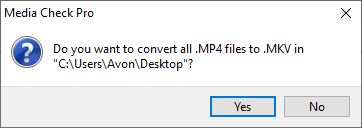
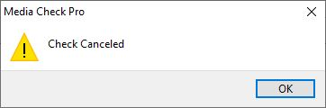
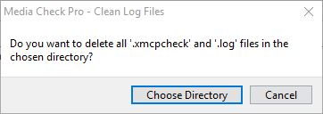
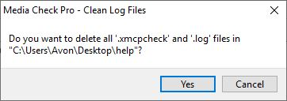
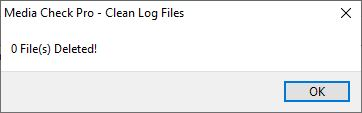
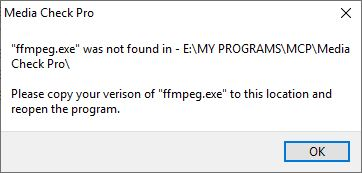

Menu
Help
This guide will help you understand how to use Media Check Pro (MCP).
Installation
Extract the .zip folder and run 'Media Check Pro.exe'.
Graphical User Interface
After starting the program, you will be greeted with this window:

This is the main window that lets you perform the checks and conversions.


Checking Files
This section shows you how to check files.
Check Single File
To check a single file, click the Check Single File button (5). Doing this will open a windows dialogue that will let you select the file you want to check. Choose a file then click 'Open'. You will then be presented with a dialogue box similar to this:
If you click 'Yes' the check will start. If you click 'No' a message box will appear informing you the check has been cancelled. Click 'Ok' and you will be sent back to the main windows.
When the check has finished you will get a message saying either the check has completed successfully, or that the check completed with errors. With ether message pressing ok will return you to the main window.
If the check was successful you will see a window that looks like the one in Image 4 (GUI section). However, if the file has errors you will see a window that looks the one in Image 3 (GUI section).
The check is now complete.
Bulk Check Folder
To check a folder the process is very similar to checking a single file.
First, select the file type from the Original File Type menu (3). You can choose one of the pre-defined file types, or type your own in. If you select * (All Files) every file type will be checked, including none media files like pdf files and text documents. This will likely cause errors so use with caution.
Once you have selected the file type, click the Bulk Check Media Directory button (6). Doing this will open a windows dialogue that will let you select the folder you want to check. Choose a folder and then click 'Select Folder'. You will then be presented with a dialogue box similar to this:
If you click 'Yes' the check will start. If you click 'No' a message box will appear informing you the check has been cancelled. Click 'Ok' and you will be sent back to the main windows.
The folder you chose, along with all subfolders will be scanned for the media type you previously selected, then, each file that is found will be checked. If no files are found, you will receive this message:
Clicking 'Ok' will send you back to the main window.
When the check has finished you will get a message saying either the check has completed successfully, or that the check completed with errors. With ether message pressing ok will return you to the main window.
If the check was successful you will see a window that looks like the one in Image 4 (GUI section). However, if the file has errors you will see a window that looks the one in Image 3 (GUI section).
The check is now complete.
Converting Files
This section shows you how to convert files.
Convert Single File
To convert a single file, first select the file type you want to convert to from the New File Type drop-down list (4) once you have done that select the format/codec you want to use from the Conversion Options drop-down list (12). If you want to adjust the quality or other options, see the Advanced Options section.
Once you have selected your options click the Convert Single File button (7) doing this will open a windows dialogue that will let you select the file you want to convert. Choose a file then click 'Open'. You will then be presented with a dialogue box similar to this:
If you click 'Yes' the conversion will start. If you click 'No' a message box will appear informing you the conversion has been cancelled. Click 'Ok' and you will be sent back to the main windows.
During the conversion you will see a command prompt window appears, you do not need to interact with this window, it is just a display of what FFMPEG is doing.
When the check has finished you will get a message saying either the conversion has completed successfully, or that the conversion completed with errors. With ether message pressing ok will return you to the main window.
Bulk Convert Folder
To convert all files in a folder, you follow a similar process as converting a single file.
First, select the file type you want to search for from the Original File Type menu (3). You can choose one of the pre-defined file types, or type your own in. If you select * (All Files) every file type will be converted, including none media files like pdf files and text documents. This will likely cause errors so use with caution.
Next, select the file type you want to convert to from the New File Type drop-down list (4) once you have done that select the format/codec you want to use from the Conversion Options drop-down list (12). If you want to adjust the quality or other options, see the Advanced Options section.
Once you have selected your options click the Bulk Convert Media Directory button (8) doing this will open a windows dialogue that will let you select the folder you want to convert. Choose a folder and then click 'Select Folder'. You will then be presented with a dialogue box similar to this:
If you click 'Yes' the conversion will start. If you click 'No' a message box will appear informing you the conversion has been cancelled. Click 'Ok' and you will be sent back to the main windows.
The folder you chose, along with all subfolders will be scanned for the media type you previously selected, then, each file that is found will be converted. If no files are found, you will receive this message:
Clicking 'Ok' will send you back to the main window.
During the conversion you will see a command prompt window appears, you do not need to interact with this window, it is just a display of what FFMPEG is doing.
When the check has finished you will get a message saying either the conversion has completed successfully, or that the conversion completed with errors. With ether message pressing ok will return you to the main window.
Cancel Check or Conversion
The process for cancelling a check or conversion is the same. At any point simply click the 'Cancel' button (15) and MCP will safely cancel the check or conversion.
When the process has been stopped you will see a message like this:
Click 'Ok' and you will be taken back to the main window.
Check and Conversion Logs
During the checking and conversion process, log files are created. If there are no issues when dealing with your files these logs are deleted. However, if any errors are spotted the logs are kept.
When a check or conversion is completed you will see a window similar the one in Image 3 or 4 (GUI section). You will notice in Image 3, which is what happens when a check returns errors, there is a button that says 'Show Log' (16). This button opens a saved text file that lists all files that contained errors from the previous run of the program. This file is saved in the root of the directory you asked to search / the directory where the single file you selected is stored.
With the information in the log, you should be able to locate the problematic files. When you do, you will notice another log file with the same name next to each file in question. This contains the ffmpeg log that was captured during the check or conversion of the file. Letting you see in detail what was wrong with the file.
Advanced Options
Media Check Pro has some advanced options.
Error Levels - When checking files, you can choose the level of detail the check looks for, either Errors Only, or Errors and Warnings. This is done with the Check Level drop down (11). Errors only if the default and will only pick up things that would stop the video playing. Warnings will pick up anything that may be wrong with the video, even if it plays perfectly in your choice of video player you will most likely still get errors.
Conversion Options - As mentioned in the conversion sections you can choose from a range of conversion options with the drop-down list (12). When you select one you will notice the text in the FFMPEG CMDs box (13) change. This is the list of commands that will be run when converting. Before converting, you can change the text in the text box to adjust the conversion options. Whatever is typed in the box will be run. The commands are standard ffmpeg commands that would go in between the input and output flags when using ffmpeg in command prompt. See this page for details. https://ffmpeg.org/ffmpeg.html.
Clean Logs - When checking and converting files MCP creates some log files next to the original source file. After running MCP if you still see these it means the file had errors. As these files could build up MCP has a tool for cleaning them built in.
To run this tool go to the help menu (2) then click 'Clean Log Files'. You will then be presented with this window:
Click 'Choose Directory' and choose the folder you want to clean. WARNING this will remove all files with the extension '.log' or '.xmcpcheck'.
Once you have selected the folder you will be given a final confirmation window:
Clicking 'Yes' will clean the files, clicking 'Cancel' will top the process.
Once the process is complete you will see a message like this, informing you how many files have been deleted. Clicking 'Ok' will return you to the main window.
Errors
Although you might see MCP say a media file has errors, there is only one error the program itself can encounter.
On start-up, MCP looks for 'ffmpeg.exe' in the program folder. If this is not there you will see this message:
Under normal usage, you should never see this message. However, if you delete or rename 'ffmpeg.exe' this message will appear. This error can also occur if you force quit the application then start it back up. This is because during the checking and conversion process 'ffmpeg.exe' is temporarily renamed. If the application is forcefully terminated during this time the file may not revert back to its original name, causing the error.
If this occurs, look in the folder that contains 'Media Check Pro.exe'. If you see a file that has a similar name to '00000000-000000000_ffmpeg.exe' where the 0s can be any number, rename it to 'ffmpeg.exe' then restart the program. If you cannot find this file, go to https://ffmpeg.zeranoe.com/builds/ and download the latest 64bit static windows build. Then place 'ffmpeg.exe' in the Media Check Pro folder.